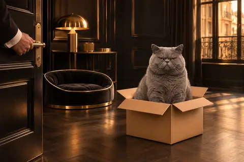

Koci Notatnik / Kocie opowieści
Oprowadzam po apartamencie · 4 min czytaniaJak przygotować dom dla kota? Odbiór techniczny mojej rezydencji.
Kochani, wybrałem człowieka, a w pakiecie dostałem mieszkanie. Stan techniczny: niezły. Stan umysłowy obsługi: do obserwacji. Kupił mi drogie legowisko, po czym wyrzucił karton. Pierwszy dzień, a już prawie rozwiązaliśmy umowę.

Na szczęście odzyskał karton. Przeprowadzka mogła ruszyć dalej. On nazywał to „przyjęciem kota pod swój dach”. Ja: przejęciem nieruchomości wraz z personelem.
— Czuj się jak u siebie — powiedział.
Spokojnie. Zamierzałem. Nie planowałem natomiast czuć się jak u ciebie, bo widziałem ustawienie poduszek.
Jak przygotować dom dla kota? Zacznij od spokojnej bazy.
Jeden bezpieczny pokój lub spokojna wydzielona przestrzeń pomagają poznać nowe otoczenie stopniowo. Przygotuj kryjówkę i potrzebne rzeczy przed przyjazdem. Nie urządzaj komitetu powitalnego z całej rodziny. To nie otwarcie supermarketu.
Mój człowiek chciał mnie od razu oprowadzać. Kuchnia, salon, sypialnia. Kochany, ja jeszcze nie zdecydowałem, czy twoje skarpetki są zagrożeniem, a ty już proponujesz zwiedzanie piwnicy.
Co musi znaleźć się w kocim apartamencie?
Kuweta powinna być stale dostępna, w spokojnym miejscu, daleko od misek. Przy kilku kotach punktem wyjścia jest liczba kotów plus jedna kuweta, rozstawione w różnych lokalizacjach. Prywatność jest ważna. Człowiekowi też nie podaje się obiadu obok sedesu, choć po niektórych pomysłach mam pytania.
Na początek zapewnij znane jedzenie i żwirek, wodę ustawioną osobno od jedzenia, kryjówkę, wygodne miejsce odpoczynku, stabilny drapak i bezpieczne zabawki. Drogie logo nie jest dodatkowym składnikiem komfortu.
Człowiek wydał fortunę na legowisko. Położyłem się w kartonie. W jego oczach zobaczyłem błąd systemu. Pozwoliłem mu chwilę popracować. Może następnym razem kupi mi karton i zaoszczędzi na dodatkach.
Jak zabezpieczyć mieszkanie?
Sprawdź okna i balkon, schowaj leki, chemię, luźne sznurki i małe niebezpieczne przedmioty. Zabezpiecz przewody i usuń toksyczne rośliny z zasięgu kota. „Ale ładnie wygląda” nie jest certyfikatem bezpieczeństwa. Mój człowiek wyglądał na kompetentnego. Wnioski wyciągnij sam.
Pierwszy dzień: bez wyciągania gwiazdy z kryjówki.
Postaw transporter w bazie, otwórz i pozwól kotu wyjść we własnym tempie. Gdy schowa się w bezpiecznym miejscu, nie wyciągaj go. Zostaw dostęp do potrzebnych rzeczy, mów spokojnie i utrzymuj przewidywalny rytm.
— Chyba mnie nie lubi — wyszeptał mój człowiek po czterech minutach.
Cztery minuty. Nawet jego telefon dłużej instaluje aktualizację. A ja mam zaufać nowemu kontynentowi, zapachowi odkurzacza i osobie, która wita mnie słowem „puchaczek”.
Kiedy pokazać kotu resztę domu?
Gdy czuje się pewniej w bazie, stopniowo udostępniaj kolejne pomieszczenia, zostawiając drogę powrotu. Nie ma jednego terminu dla wszystkich kotów. Dzieci powinny dawać kotu spokój w kryjówce, przy jedzeniu i odpoczynku. Inne zwierzęta poznawaj stopniowo, bez wymuszania kontaktu.
Wieczorem sam wyszedłem z kartonu. Człowiek siedział cicho. Pierwszy raz od przyjazdu zachowywał się jak dobrze ustawiony mebel. Podszedłem bliżej. Może ta rezydencja jednak nie wymaga wymiany całego personelu.
Pytania do Jego Mruczności
- Czy muszę kupić wszystko najdroższe?
- Nie. Liczy się bezpieczeństwo, wygoda i rozmieszczenie rzeczy. Cenę designerskiego legowiska docenisz Ty. Ja sprawdzę karton. W opisie zdjęcia nazwę to minimalizmem.
- Czy od razu zmienić karmę i żwirek?
- Na początku zachowaj te znane kotu. Potrzebne zmiany wprowadzaj stopniowo.
- Czy chowanie się znaczy, że mnie nie lubi?
- Nie. Obce otoczenie może przytłaczać. Daj czas i obserwuj jedzenie, picie, korzystanie z kuwety oraz małe postępy.
- Kiedy poprosić o pomoc?
- Jeśli kot nie je, wygląda na chorego, ma problemy z oddawaniem moczu lub stres się utrzymuje, skontaktuj się z lekarzem weterynarii. Nie zakładaj, że każdy objaw to tylko przeprowadzka.
Co ma zapamiętać Twój człowiek
- Przygotuj spokojną bazę, kryjówkę, miski, kuwetę i stabilny drapak przed przyjazdem.
- Kuwetę odsuń od jedzenia i wody. Na początku zachowaj znaną karmę i żwirek.
- Zabezpiecz okna, balkon, chemię, leki, przewody i niebezpieczne rośliny.
- Nie wyciągaj kota z kryjówki. Rozszerzaj dostęp do domu i przedstawiaj domowników stopniowo.
- Obserwuj apetyt i kuwetę; problemy zdrowotne konsultuj z lekarzem, zamiast przypisywać wszystko przeprowadzce.